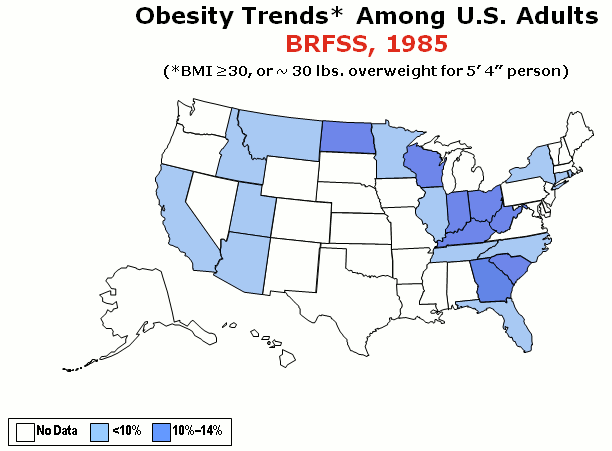
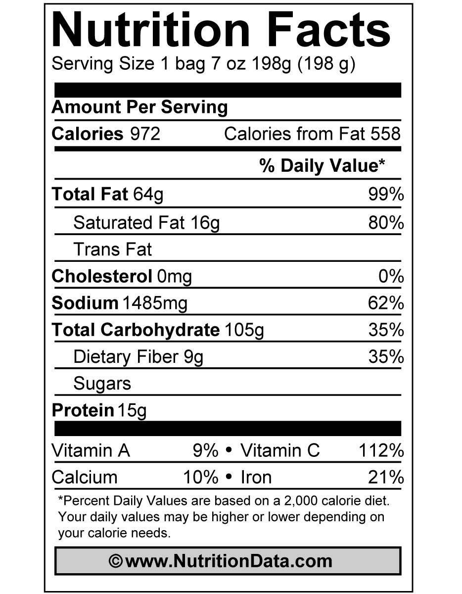
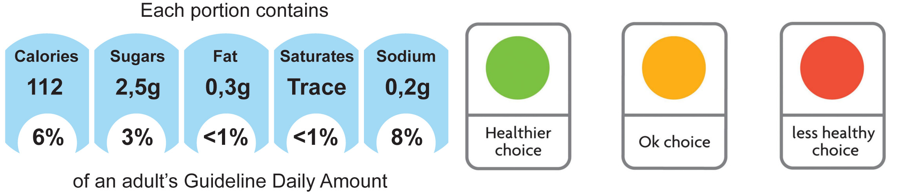
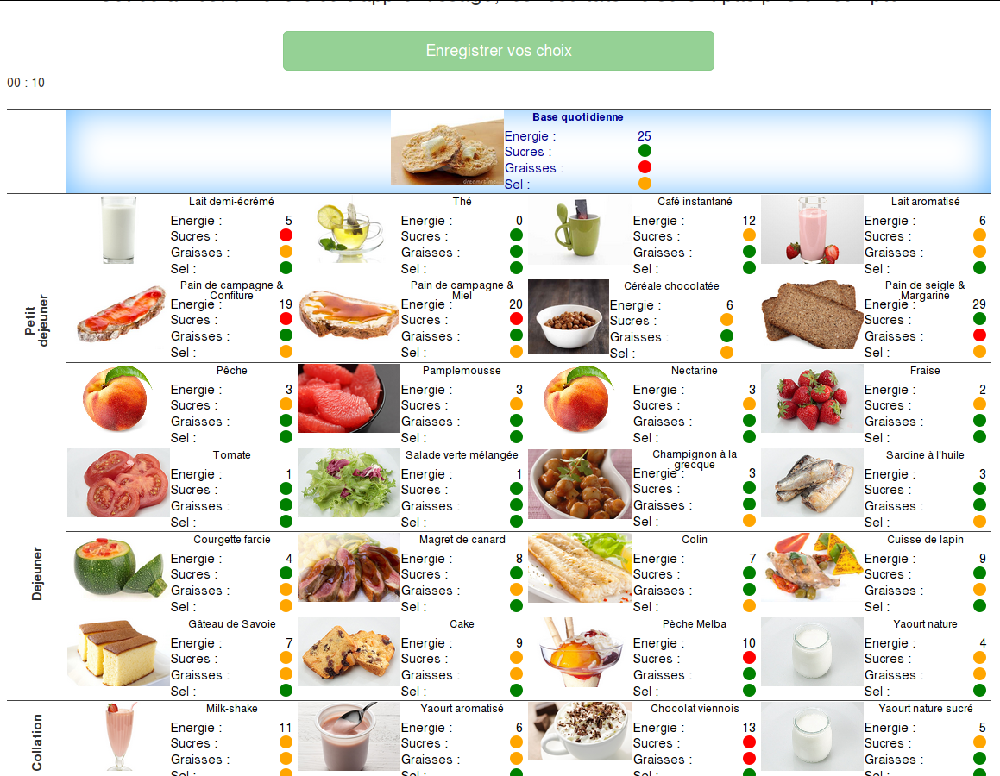
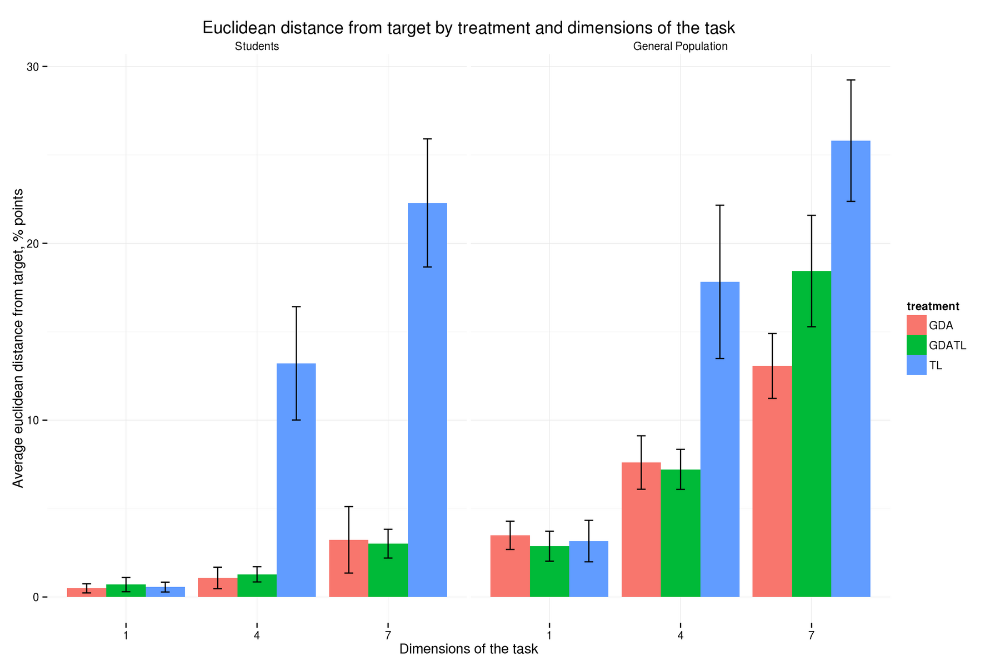
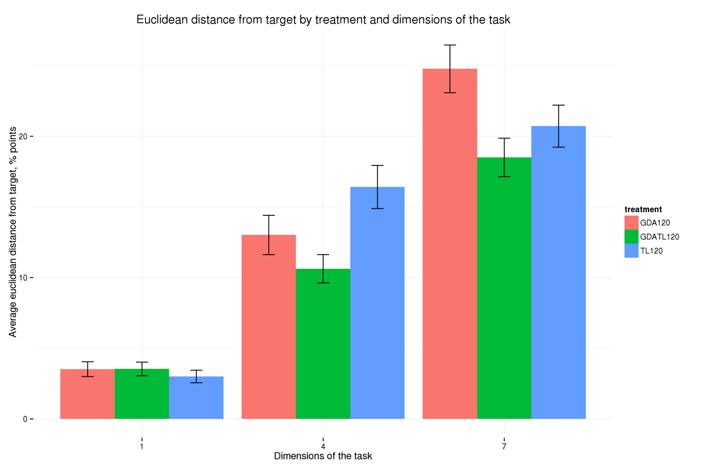

Nutritional labeling: numbers or colors?
[This post presents the paper Helping consumers with a front-of-pack label: numbers or colours? the paper can be downloaded here.]
Bad eating habits have negative consequences. We have always known as much. But the rise of obesity in the last decades is impressive and apparently unstoppable. Only a handful of US states had more than 10% of technically obese population (BMI, Body Mass Index >30) in the mid-1980s. Nowadays there is not a single US state with less than 20%, and many have more than 30%.

The recent accumulation of scientific evidence that diabetes and heart diseases are correlated with obesity rang an alarm bell. Governments have hence launched new nutrition policies with the aim of helping consumers eat healthier diets.
King among those policies are nutritional labels. The idea is simple: consumers might be ill-informed about the bad effects of their food. Giving clear information will help them make the correct choice. But what is clear information? How can we be sure that consumer read, understand, and use the label in their everyday shopping? Turns out that the actual format of the information provided is crucial.

One early idea was to give the consumer all the nutritional details of each food item. This policy has been widely adopted around the world. One example is the ‘Nutrition Facts‘ table that is present on the back of pack in the US. This is a lot of information, and would be perfect for a computer or for someone really knowledgeable about nutrition. That is, this table is very well, but might convey too much information, does not lead to easy comparisons across products, and the information provided is not very focal.
Nutrition facts are very well if you already care about them, if you take the time and pain to go through them, and if you think a lot about your food choices and how to integrate this raw information in your diet. But most of the people take food decisions in the matter of seconds, without much second thoughts.
Consumer studies have proved that in order to be used, nutrition information must be visible, on the front of pack, salient and focal. That is: less information, in a more prominent position, and at least partially already processed to be of immediate use by consumers. Several different labels following these ideas have appeared, but two are on the center of the debate: Guideline Daily Amounts (GDA) and Traffic Lights (TL).

GDA provides numerical information for each key nutrient, as a % with respect to a recommended daily amount. In the figure, the food item provides 6% of the overall Kcal for one day for an average adult. TL on the other hand provides a color-code, similar to road lights. GDA gives more detailed and complete information, but relies on high cognitive skills. TL gives strictly less information, but it is focal and can be used with fast heuristic, arguably requiring lower cognitive skills.
Which label is better? This is not an easy question to answer. There is a vast literature on the topic, that asks which label is better recognized, understood, used… There are clear and comprehensive reviews here and here. The current literature is advanced and well grounded, but suffers from two shortcomings. First, evaluations of label performance are based on products rather than diet. Most experimental studies implement simplified choice environments involving two or maximum three products. But constructing a healthy diet is a different task than facing binary choices: on a daily basis, consumers must select dozens of food items. Second, the question asked seems to determine the relative performance of the labeling schemes. Asking ordinal, relative questions over small choice sets favors TL; asking cardinal, absolute questions over large choice sets favors instead GDA.
In a recent paper written with Laurent Muller and Bernard Ruffieux we enter this debate with a new experimental task. Since the questions asked bias the results, we go back to base camp and directly ask the question for which nutritional label have been developed: building healthy diets. We asked subjects to act as nutritionists, and build daily menus by choosing from a large set of products and within a predetermined meal structure (breakfast, lunch, afternoon snack, dinner). Subjects were paid only if the chosen menu satisfied a set of nutritional criteria. To guide subjects in their choices we provided GDA, TL or a mixed GDA+TL label, mixing both colors and numbers. We also varied the number of nutritional goals. The participants faced easy, 1-dimensional tasks, in which the daily menus had to satisfy only an energy constraint; medium, 4-dimensional tasks, in which goals included energy but also limits on the amount of bad nutrients (saturated fat, sugar and salt); and difficult 7-dimensional tasks, in which on top of the above participants had also to maximise the amount of good nutrients (vitamin C, calcium and fiber). The experiment was designed so that GDA and TL are only assessed on their efficacy to help consumers build a healthy daily diet.

We ran two sets of experiments. In a first set, subjects had unlimited time and could use paper and pencil to take notes and perform computations. We recruited both highly-skilled INP engineering studies and subjects from the overall population in Grenoble, France. In a second set, subjects were limited to 2 minutes per task (a task was one screen composed of 12 food choices, similar to the screenshot above) and had no access to paper and pencil.
Our results are striking. When given enough time, GDA outperforms both TL and the mixed GDA+TL label, at any level of difficulty. This is striking because 7-dimensional tasks are very difficult exercises: try to choose your food keeping in mind 7 different numbers, making sure that on none of the 7 dimensions you exceed the given thresholds! TL led to slightly faster decisions, but it also led to much worse performance. This was especially true for INP students, that were extremely good at the task. In the Figure below you see the average distance from target over the different labels. Higher bars mean worse performance (i.e., subjects are farther away from target(s)). The data is plotted separately for students (left) and the general population (right) and for 1, 4 and 7-dimensional tasks.

Judging from the results of our experiment, GDA wins hands down the competition. But wait: these results are obtained in an ideal setting for GDA. Subjects have unlimited time & resources, see all information on the same screen, are incentivized and focus fully on the task. This is a very different setting from real food purchases. What would happen if subjects were only a tiny bit stressed? How robust is the strength of GDA?
Our second set of experiments answers exactly that question. It turns out that introducing limited changes — a time constraint and no paper and pencil allowed — completely nullifies the advantage of GDA. GDA performs exactly as TL in 4-dimensional and TL outperforms GDA in 7-dimensional tasks (see the barplot of experiment 2 below).

Why this overturning of results? Computations are key to understand. GDA is the right tool for decision makers that decide to compute their way out of the given task. The setting of Experiment 1 was ideal for GDA. In Experiment 2 subjects switched to heuristics other than plain computation in the presence of colour-codes.
We know that our experiment is rather artificial. This limits the direct applicability of our results to the real world. Nonetheless, the artificiality gives us a clear message: if GDA fails — and it does, as soon as consumers are slightly time-constrained — in our biased environment, with incentives and focused attention, it will very likely fail in the noisier, fuzzier, complicated real world.
But to be sure of that, we need more research, which is underway. Stay tuned!
[Link to the full paper. Comments welcome!]
Back to top